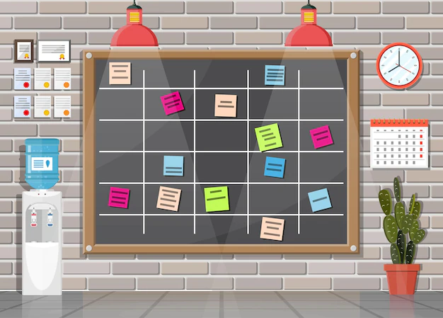
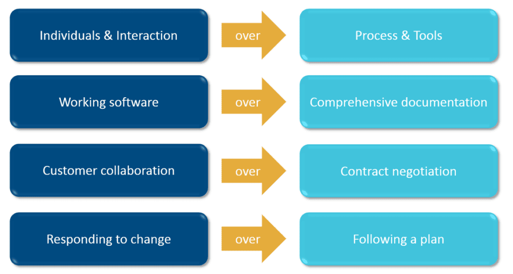
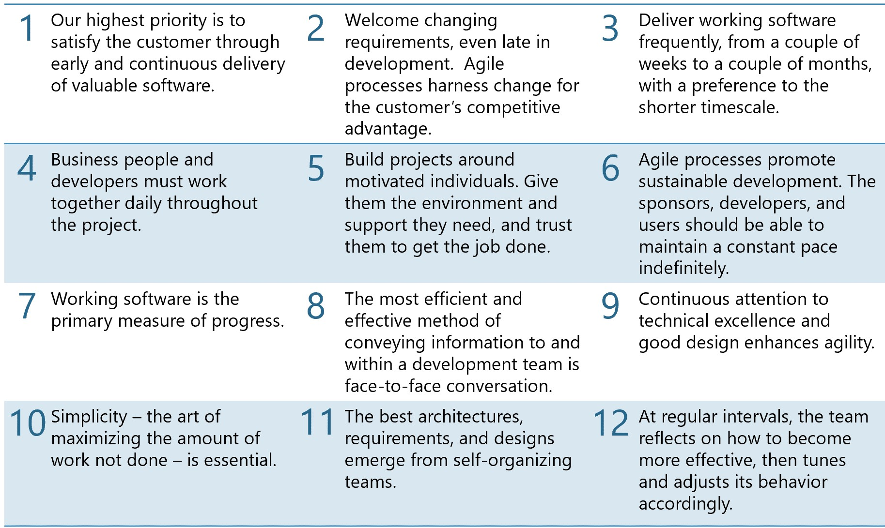

What is Agile?
What Agile is not
Many things get called Agile - especially by people who trying to selling something
If you ask the makers of paper products, they will tell you that to be Agile you need to write user stories on the sticky note cards
If you ask a consultant, you'll likely hear that is a methodology for developing software

Agile is not a:
Methodology
specific way of doing software development
framework or a process
Agile is a set of Values and Principles
Agile
Developing
software
Beliefs
Decisions
The Agile Manifesto
We are uncovering better ways of developing software by doing it and helping others do it. Through this work we have come to value:
That is, while there is value in the items on the right, we value the items on the left more.
12 Principles
Agile is real utility is in giving people a common foundation for making decisions about the best way to develop software
Making each decision based on the principles and values that the team has decided to follow.